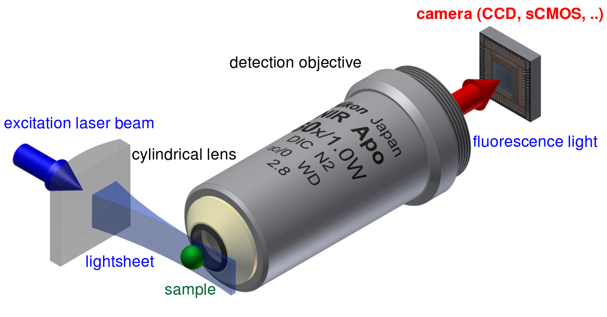

Streaming FFTs on Large 3D Microscope Images
Peter Steinbach
GTC 2015, San Jose (CA, USA), March 20, 2015
Max Planck Institute of Molecular Cell Biology and Genetics
Dresden, Germany
Disclaimer
This presentation and affiliated preprint is licensed under a Creative Commons Attribution 4.0 International License.

CC-BY 4.0
All material contained in the slides are linked to their source if not produced by the author. If you find intellectual property is not attributed to your satisfaction, feel free to contact me or report a bug report to github.com/psteinb/gtc2015.
For question, remarks or details on this presentation, consult the github repository:
github.com/psteinb/gtc2015
More details in a preprint:
idisk.mpi-cbg.de/~steinbac/gtc2015/lmvn.pdf
Outline
- SPIM and the biological data deluge
- Multi-View Deconvolution
- From Model Systems to a Library
SPIM and the biological data
deluge
Selective Plane Illumination Microscopy
Live 3D Organism Development
The Deluge
| stack shape | views | data volume (GB) |
|
|---|---|---|---|
| custom | 928x390x390 | 3 | .8 |
| custom | 1670x1070x345 | 4 | 4.6 |
| proprietary | 1920x1920x320 | 5 | 11.0 |
- 16-bit encoding
- multiple angles (3-12)
- sometimes multiple channels (different dyes)
- sometimes multiple timepoints
(observe specimen over hours/days)
Multi-View Deconvolution
“Efficient Bayesian-based Multiview Deconvolution”
S. Preibisch, F. Amat, E. Stamataki, M. Sarov, R.H. Singer, E. Myers and P. Tomancak
Nature Methods (2014), 11(6):645-648.
Considerable Contrast Enhancements
Algorithm
stack_f32 running = stack_f32(const);
stack_f32 view[n_view], kernel1[n_view], //loaded from disk
kernel2[n_view], weights[n_view]; //loaded from disk
for( i : n_iterations){
for( v : n_view){
stack_f32 temp = running;
temp = convolve(temp,kernel1[v]); //FFT based
temp = view[v]/temp;
temp = convolve(temp,kernel2[v]); //FFT based
running = regularize(running, temp, weights);
}
}
- data type conversion from 16bit to 32bit
- time domain convolutions not feasible due to kernel size (79x121x101)
- currently implemented in jave, GPU used for FFT (only 2x speed-up)
A Native Open-Source Library
- implement multi-view deconvolution for fixed 3D image stacks
- integration into java library
- be cross platform
- be fast
From Model Systems to a Library
3D FFTs
stack_f32 temp(random);
for( i : n_iterations){
fft_3d_r2c(temp);
}
- CUDA 6.5
- gcc 4.8.1
- machine details
3D FFTs: CUDA API
- memory/transfer bound!
- use async transfers?
- use batched transforms?
Batched Transforms
stack_f32 synthetic_data[n_view];
plan_t
plan = plan_dft_r2c(3,
synthetic_data[0].shape(0),
synthetic_data[0].shape(1),
synthetic_data[0].shape(2),
FFTW_MEASURE);
//start timing
float* device_ptr;
for ( v : n_view ){
cudaMemcpy(device_ptr,
synthetic_data[v].ptr());
execute_r2c(plan,
device_ptr,
device_ptr);
cudaMemcpy(synthetic_data[v].ptr(),
device_ptr);
}
//end timing

Synchronous Transfers!

Asynchronous Transfers?

Batched Transforms, continued
stack_f32 synthetic_data[n_view];
cudaEvent_t stream_events[n_view];
fftwf_plan plans[2];
cudaStream_t streams[2];
float* d_buffer[2];
// ... initialize
//start timing
for ( v : n_view ){
cudaMemcpyAsync(d_buffer[v % 2],
synthetic_data[v],
streams[v % 2]);
cudaEventRecord(stream_events[v],streams[v % 2]);
cudaStreamWaitEvent(streams[v % 2],
stream_events[v - 1]);
// on stream streams[v % 2]
cufftExecR2C(plans[v % 2],
d_buffer[v % 2])
cudaMemcpyAsync(synthetic_data[v],
d_buffer[v % 2],
streams[v % 2]);
}
cudaDeviceSynchronize();
//end timing
//clean-up

Going For Convolutions!
// ... initialize
inplace_forward_transform(kernel_data[:]);
//start timing
cudaMemcpyAsync(d_buffer[kernel],
kernel_data[0],
streams[kernel]);
for ( v : n_view ){
cudaMemcpyAsync(d_buffer[image],
synthetic_data[v],streams[image]);
// on stream streams[image]
cufftExecR2C(plans[image],
d_buffer[image])
cudaDeviceSynchronize();
multiply<<< ... , 0 , streams[image]>>>(
d_buffer[image],
d_buffer[kernel],...);
cudaMemcpyAsync(d_buffer[kernel],kernel_data[v+1],
streams[kernel]);
// on stream streams[image]
cufftExecC2R(plans[image],
d_buffer[image])
cudaMemcpyAsync(synthetic_data[v],
d_buffer[image] ,
streams[image]);
}
cudaDeviceSynchronize();
//end timing
//clean-up

Putting it all together
//CODE DOESN'T FIT ON THIS SLIDE ANYMORE!
libmultiviewnative

- open source library github.com/psteinb/libmultiviewnative
- further details: github.com/psteinb/gtc2015
Summary
- big data is hard, especially on GPUs
- asynchronous execution helps
(does not make PCIe bus faster) - Waiting for Pascal!
For more details about results and implementations shown, come to:
github.com/psteinb/gtc2015
Next Steps
- consolidate API and integrate with java library
- look into kernel separation
- multi-gpu support
Have more ideas? Come to:
github.com/psteinb/libmultiviewnative
Thank you for your attention!